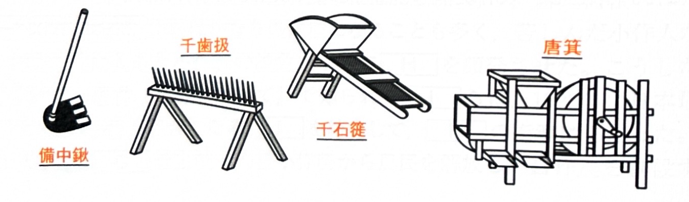

008 農業・産業史
青森県三内丸山遺跡でクリ・アワなどを栽培。縄文晩期には福岡県板付遺跡や佐賀県菜畑遺跡などで水田址が出土し、水稲耕作が始まっていた。稲作は北上し青森県垂柳遺跡でも水田址が出土している。
【前期】 水はけの悪い湿田を利用し、籾を直接まく直播が行われた。収穫には石包丁を用いて穂首刈りをした。
【後期】 畦（あぜ）で区画した乾田が開発され、田植えが普及。収穫には鉄鎌を用いて根刈りをするようになった。
畿内・瀬戸内地方で麦を裏作とする二毛作が広まる。牛馬耕が普及し、肥料として刈敷や草木灰、動物の糞尿である厩肥が利用された。
二毛作が全国に普及し、一部で米・麦・そばを作る三毛作も開始された。灌漑用水車や人間の糞尿である下肥が利用されるようになる。
稲の品種改良も進み（早稲・中稲・晩稲）、災害に強く多収穫な大唐米（赤米）も栽培された。
【新田開発】 代官見立新田や、有力商人が資金を出す町人請負新田（鴻池新田・紫雲寺潟新田など）が盛んに行われた。
【農学の発展】 宮崎安貞の『農業全書』や、大蔵永常の『農具便利論』『広益国産考』などの農書が普及した。
【商品作物と肥料】 麻・木綿・茶・桑などの四木三草をはじめとする商品作物の栽培が本格化。それに伴い、お金で買う肥料である金肥（油粕・干鰯・〆粕）が普及した。
図を表示する（江戸時代の主な農具）

【農具の進歩】
- 備中鍬：深く耕すことが可能な鍬。
- 千歯扱：効率的な脱穀具（別名：後家倒し）。
- 穀竿（唐竿）：叩いて脱穀する道具。
- 千石簁：網目を利用した穀類の選別器具。
- 唐箕：手回しで風を起こして穀類を選別する器具。
- 踏車：足踏み式の揚水機（中国伝来の竜骨車に代わり普及）。
渋沢栄一らによって、蒸気機関を動力とする大阪紡績会社が設立された（翌年開業）。
国内の綿糸の生産量が、輸入量を上回った。
製糸業において、器械製糸の生産量が、伝統的な座繰製糸の生産量を上回った。
紡績業では、綿糸輸出関税免除法が公布された。
1896年に綿花輸入関税免除法が公布され、翌1897年には綿糸の輸出量が輸入量を上回った。
日本の生糸輸出量が中国を超えて世界第1位となった。また、綿布の輸出額も輸入額を上回った。
-
中世の主な都市
商業や交通の発達に伴い、各地に様々な性格を持った都市が発展しました。城下町 戦国大名の居城を中心に形成。（例：春日山、一乗谷、小田原、府中、山口など） 港町 海や河川の交通の要衝。（例：十三湊、敦賀、小浜、兵庫、坊津、大津など） 門前町 有力な寺社の前に形成。（例：長野/善光寺、宇治・山田/伊勢神宮など） 寺内町 浄土真宗（一向宗）の寺院を中心に、濠などで防御を固めた町。（例：吉崎、石山、富田林など） 自治都市 豪商たち（会合衆や年行司）によって自治運営された都市。（例：堺、博多、平野） -
官営事業の払下げ（明治時代）
明治政府は殖産興業政策の転換により、赤字となっていた官営工場や鉱山を、政府と密接な関係を持つ政商へ安価で払い下げました。これがのちの財閥形成の基礎となります。払下げ対象の事業 払下げ先（政商） 高島炭鉱（長崎）、佐渡金山、兵庫造船所など 三菱（岩崎弥太郎など） 三池炭鉱（福岡）、富岡製糸場など 三井（三井家） 院内銀山、足尾銅山など 古河（古河市兵衛） 深川セメント製造所 浅野（浅野総一郎） 兵庫造船所 川崎（川崎正蔵）